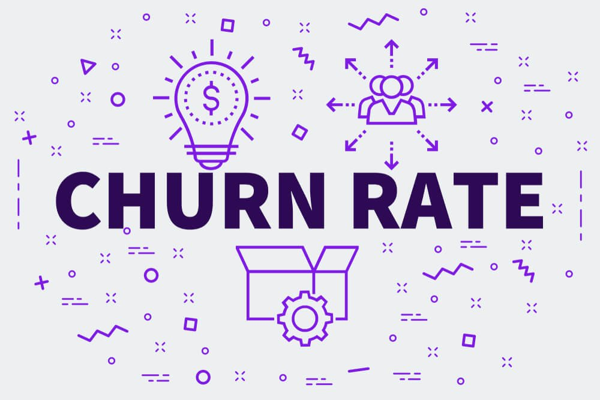
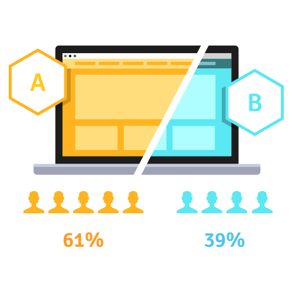
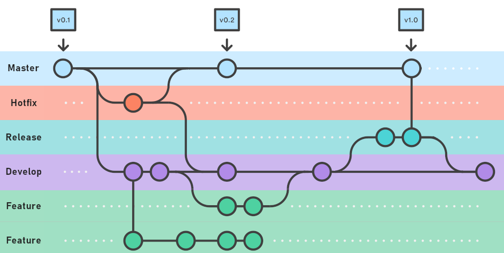
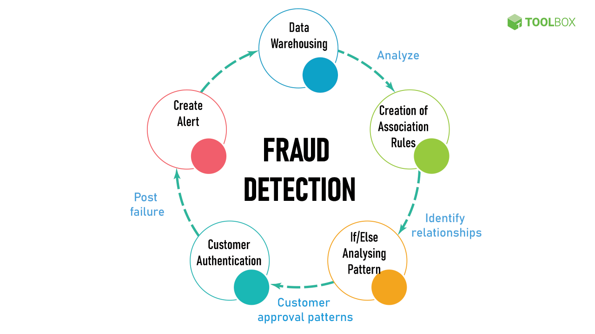

Finalizado
Construção de um programa de fidelidade
com clusterização de clientes
Eu usei Python e técnicas não-supervisionadas de Machine Learning para segmentar um grupo de clientes
em base em suas características de performance de compra,
a fim de selecionar grupos de clientes para formar um programa de Fidelidade com o objetivo de aumentar
a receita da empresa.
As ferramentas utilizadas foram:
- Git, Github, Gitlab.
- Python, Pandas, Matplotlib e Seaborn.
- Jupyter Notebook, Anaconda, papermill e WSL2.
- K-Means, Hierarquical Clustering, GMM, DBScan.
- AWS Cloud(EC2 , S3, Postgres, SQLITE).
- Metabase Visualization.
Em Andamento
Identificação de imóveis
para compra e revenda a fim de maximizar os lucros
Identificação de imovéis abaixo do preço médio de venda e definição do preço ideal de revenda, a partir
de uma ánalise exploratória de dados em Python.
As ferramentas utilizadas foram:
- Git, Github, Gitlab.
- Python, Pandas, Numpy e Seaborn.
- Jupyter Notebook, Anaconda, VS Code e WSL2.
- Mapas interativos com Plotly e Folium.
- Heroku cloud.
- Streamlit Python framework web.
Finalizado
Projeto para
predizer o total de lucro da Rossmann store pata até 6 semanas adiante
O modelo prediz o quanto as lojas da Rossmann irão lucrar em 6 semanas e envia as informações do seu
interesse no mesmo instante via API para o telegram.
As ferramentas utilizadas foram:
- Git, Github, Gitlab.
- Python, Pandas, Numpy, Seaborn e Matplotlib.
- Jupyter Notebook, Anaconda, VS Code e WSL2.
- Linear Regressor Lasso , Random Forest Regressor, XGboost.
- Heroku cloud.
- Flask, Telegram API.
Finalizado
Objetivo ajudar numa campanha para uma venda
cross-sell.
O modelo Random Forest Classifier irá criar um rank dos clientes mais favoráveis a comprar da empresa
um novo seguro de vida, sendo que o mesmo já possui um seguro de carro pela mesma companhia
As ferramentas utilizadas foram:
- Git, Github, Gitlab.
- Python, Pandas, Numpy, Seaborn e Matplotlib.
- Jupyter Notebook, Anaconda, VS Code, WSL2 e SQL.
- KNN , Logistic Regression, Extra Trees, Random Forest Classifier.
- SQL Postegres.
- Flask, Telegram API.
Finalizado

A missão é identificar os clientes que renovarão sua conta no banco no proximo ano e quantos entrarão
em churn.
Usando o XGboost criamos um ranking com os clientes mais provaveis a entrarem em churn ao menos
prováveis afim de que se possa criar estratégias.
As ferramentas utilizadas foram:
- Git, Github, Gitlab.
- Python, Pandas, Numpy, Seaborn, Matplotlib e Hyperopt.
- Jupyter Notebook, Anaconda, VS Code, WSL2.
- SVM , Logistic Regression, XGboost, Random Forest Classifier.
- Plot Cumulative Gain e Lift Curve.
Finalizado

O teste A/B é uma dos métodos mais utilizados pelos Cientistas de Dados para validar hipóteses de
negócio sobre qual página web tem maior conversão, qual o melhor cupom de desconto,
qual o melhor preço promocional e assim por diante.
Analisar um teste A/B usando tanto técnicas tradicionais da Estatística,
quanto técnicas modernas de Multi-Armed Bandit (MAB).
As ferramentas utilizadas foram:
- Git, Github, Gitlab.
- Python, Pandas, Numpy, Matplotlib, scipy .
- Jupyter Notebook, Anaconda, VS Code, WSL2.
- chromedriver, flask , selenium
Finalizado

Este repositório foi criado para hospedar o projeto de analise de dados
utilizado como fim de entender toda a ferramenta git.
A empresa XGB Sales lhe contratou como cientista de dados pois ela deseja aumentar o seu lucro
comprando e revendendo as melhores motos disponíveis dentro da
base de dados que a empresa adquiriu através de um estudo de mercado.
As ferramentas utilizadas foram:
- Git, Github, Gitlab.
- Python, Pandas, Numpy, Matplotlib, seaborn, datetime .
- Jupyter Notebook, Anaconda, VS Code, WSL2.
- streamlit
Finalizado

Este projeto visa criar
uma detecção de fraude com alta precisão.
De acordo com a Infosecurity Magazine, a fraude custou à economia global £ 3,2 trilhões em 2018. Para
algumas empresas, as perdas por fraude chegam a mais de 10% de seus gastos totais. Essas perdas maciças
levam as empresas a buscar novas soluções para prevenir, detectar e eliminar fraudes.
As ferramentas utilizadas foram:
- Git, Github, Gitlab.
- Python, Pandas, Numpy, Matplotlib, seaborn, sklearn .
- Jupyter Notebook, Anaconda, VS Code, WSL2, pyspark.
- lightgbm , catboost , xgboost , hyperopt
- roc_auc_score , recall_score , f1_score , matthews_corrcoef , make_scorer , roc_curve ,
confusion_matrix
Finalizado
Desenvolvimento de um
painel para Marktplace de entregas com o Streamlit.
Neste projeto, os conceitos de programação em python, manipulação de dados, pensamento estratégico e
lógica de negócio, junto com ferramentas
de desenvolvimento web como Streamlit e Github, foram usados para desenvolver um painel gerencial com as
principais métricas de uma empresa marktplace de delivery de comida na India.
O resultado final do projeto foi um painel hospedado em um ambiente Cloud e disponibilizado atráves de
um link web. O painel pode ser acessado por qualquer dispositivo via internet.
As ferramentas utilizadas foram:
- Python.
- Jupyter Notebook, Anaconda, VS Code, WSL2, terminal.
- Streamlit
- Streamlit Cloud , Github